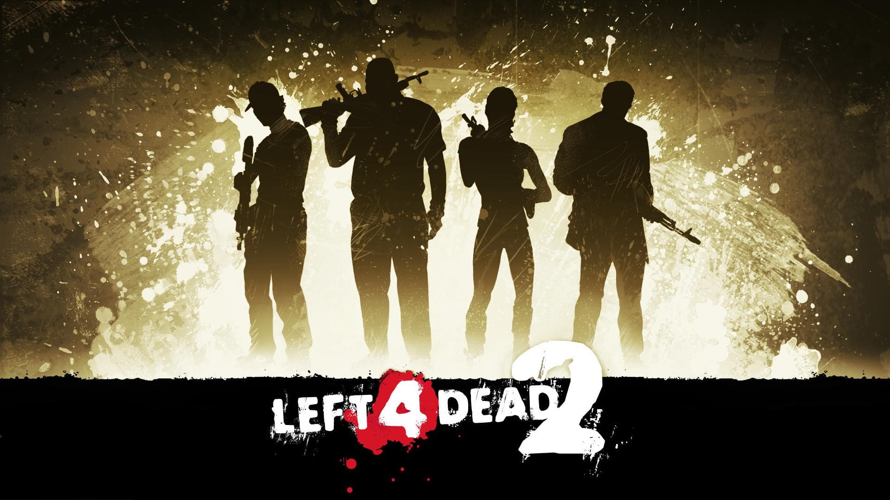
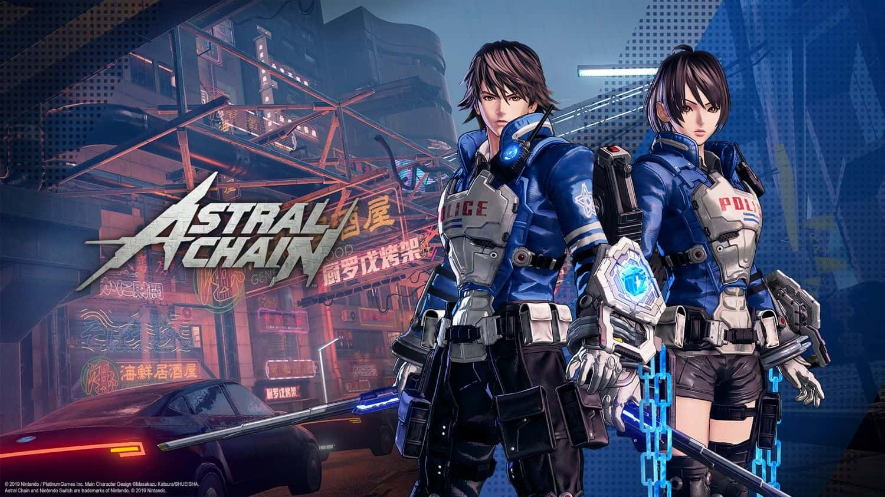

First Person Shooters are becoming more widely available for both single player and multiplayer experiences. While I don't always play them, there are a few FPS games that I do like going back towards every now and then.
One of the FPS games I usually go back towards for fun is Left 4 Dead 2 on PC. While the original content is still enjoyable to play, it the modding community that keeps the game alive with mods on weapons, character models, campaigns, and many other addons that breathe new life into the game. Other FPS games I occasionally return to are Halo: The Master Chief Collection and Borderlands 2: Game of the Year Edition.


Hack and Slash Games
Recently, Hack and Slash games drew me in due to their main premise of beating down enemies with fast-paced action as characters strike enemies with a flurry of attacks. Some of these games stay with simple hack and slash gameplay or add some elements to add some complexity to the genre for more engaging experiences.
One of these Hack and Slash games that add more to their combat system is Astral Chain. In this game's cyberpunk combat system, you control your character and another creature called a legion to fight extra-dimentional enemies instead of just controlling 1 character all of the time. Learning the combat system in this game is pretty engaging once you get the basics down and start learing the extra moves you can pull off.
JRPGs
Another genre of games I started getting into recently are JRPGs (Japanese Role-Playing Games). Common series that usually are associated with the genre are Final Fantasy and Dragon Quest. The 2 series I just mentioned are normally turn-based games with their combat systems (pretty good ones that will challenge your tactics in battles).
However, one JRPG series that is underated that I started enjoying a lot is the Ys series. Created by Nihon Falcom, this series follows a hack and slash RPG format rather than a turn-based one. This makes the combat fast-paced with action rather than going a slower pace with turn-based combat. The image listed here is from Ys VIII: Lacrimosa of Dana (Check out the game. It's pretty fun.)